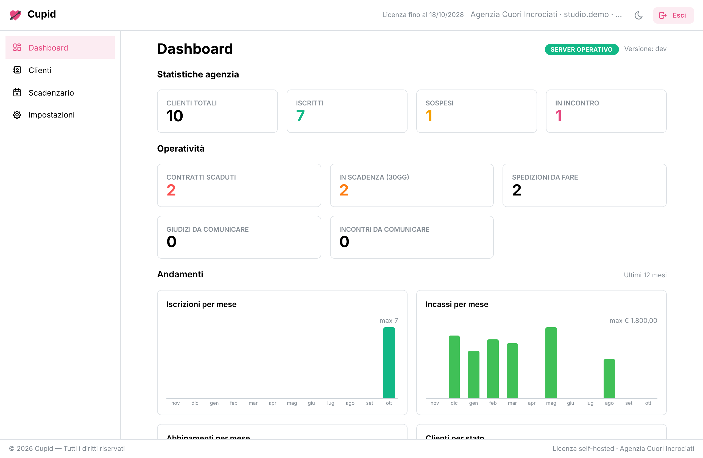
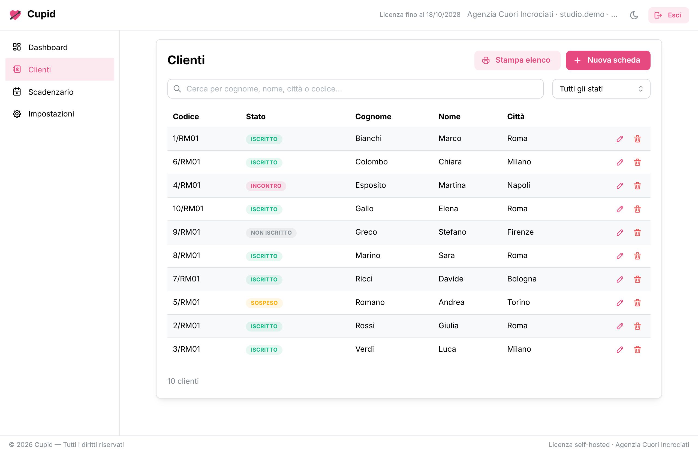
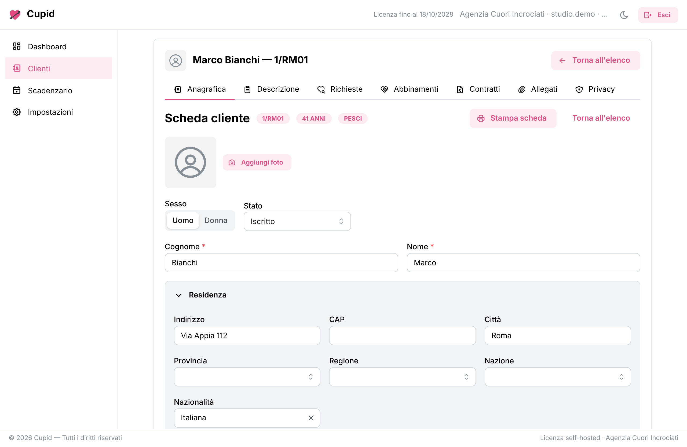
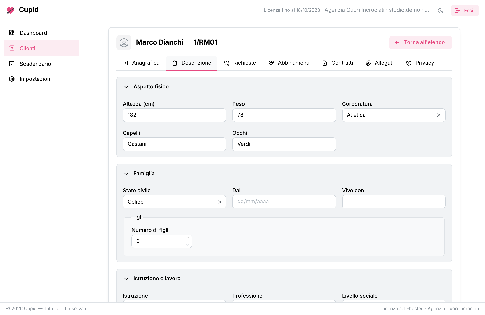
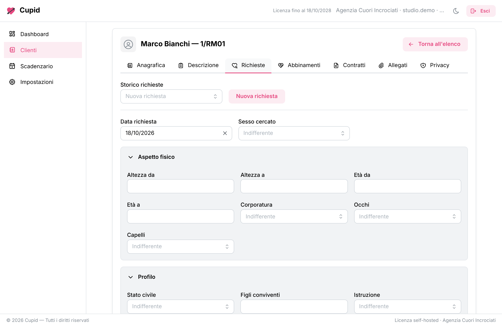
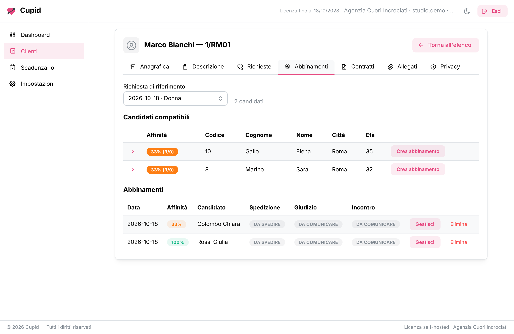
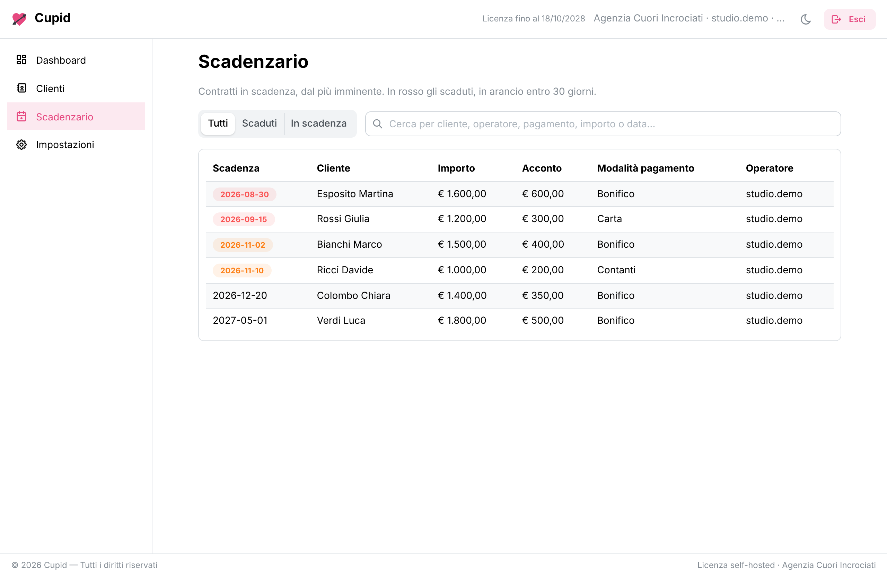
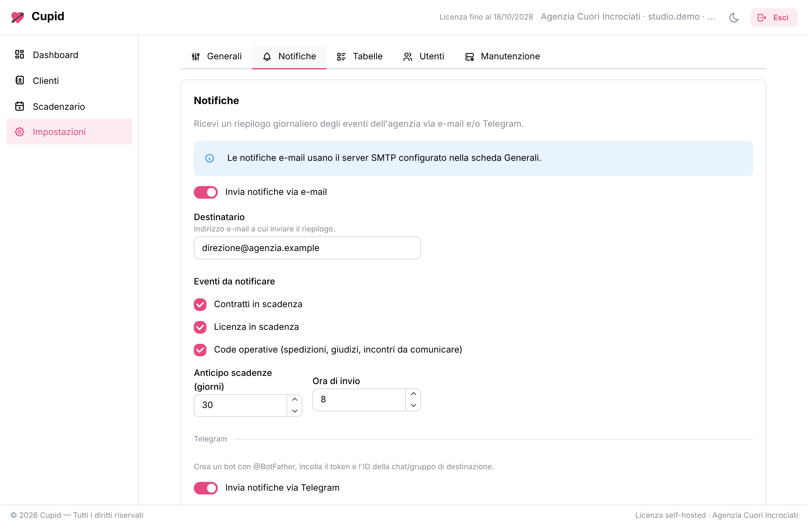
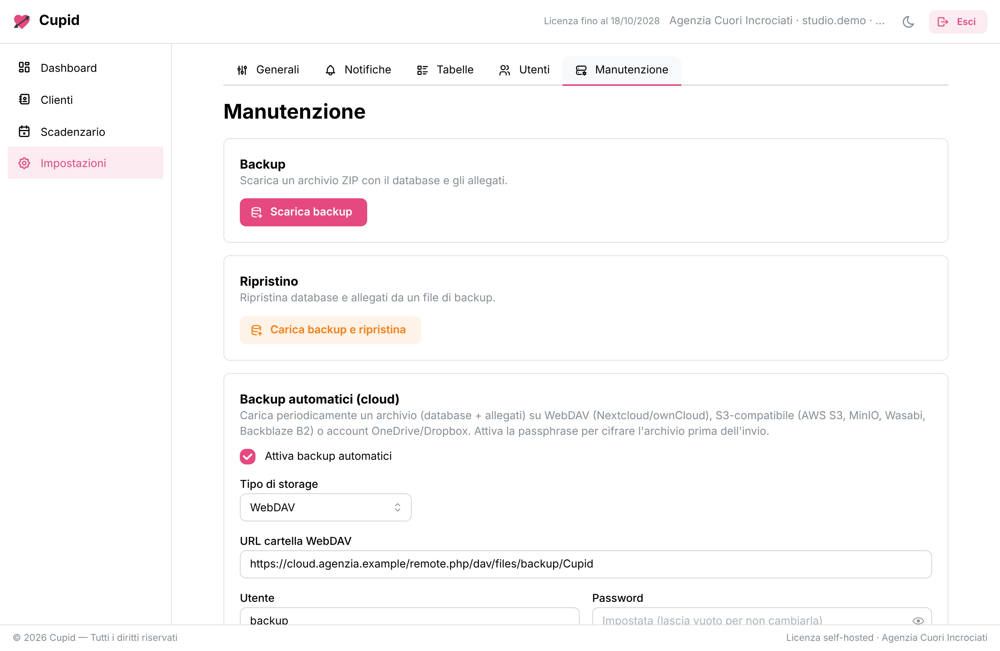

Available to license. Closed source, self-hosted or hosted.
Cupid
A web management system for matchmaking and dating agencies — a cloud-ready rewrite of the classic Cuore desktop application.
What it is
Cupid is a modern web rewrite of a long-standing management system for matchmaking and dating agencies. It preserves the entire workflow of the original desktop application — client records, descriptions, partner requests, matches, meetings, contracts, mailings and printing — and moves it onto a modern web architecture, delivered as a single Docker container that an agency can run on its own.
The screenshots below come from a demo instance filled with made-up records. In a real agency the data is its own and stays in the one container it runs in — Cupid ships GDPR tooling (consents, data export and anonymisation), an audit log and encrypted backups.

Features
- Client records
- Complete profiles with computed age and star sign, profile photo, document type, multiple contacts and geographic selectors with ISTAT town autocompletion.
- Descriptions and requests
- Physical and social traits, character and hobbies, structured children info, plus partner requests with Yes, No and Indifferent criteria and liked or disliked qualities.
- Affinity matching
- A matching engine with an affinity score and a candidate summary sheet showing photo, traits and which criteria are satisfied.
- Meetings and contracts
- The full mailing, judgement and meeting cycle with automatic client-status updates, plus contracts and a deadline scheduler.
- Print and dashboard
- Print-friendly outputs and an operational dashboard with clickable counters and trend charts.
- Notifications
- Automatic email and Telegram notifications for contract deadlines and new matches.
- Backups to the cloud
- Manual and scheduled backups to WebDAV, S3-compatible storage, OneDrive, Dropbox or Google Drive, with retention and AES-256-GCM encryption at rest.
- Users, roles and GDPR
- A capability matrix with role presets, unified settings, light and dark theme, i18n, and GDPR tools (consents, export, anonymisation) with an audit log.
The client, tab by tab
Every client is one record with the whole history on it — opened a tab at a time, from the agency's own list.




Matching, meetings and deadlines


Settings, notifications and backups


How you can run it
- Self-hosted
- The agency runs the container wherever it likes — a commercial licence with annual renewal.
- Hosted
- A dedicated instance managed for you, one per company — monthly or annual subscription.
Under the hood
| Backend | Go 1.25 (chi router), SQLite (modernc.org/sqlite, pure-Go), goose migrations |
|---|---|
| Frontend | React 19 + Vite + TypeScript + Mantine, i18n (Italian by default) |
| API | OpenAPI 3 contract with generated server (Go) and client (TS) types |
| Security | Ed25519-signed license keys (offline verification), CSP + HSTS, login rate limiting, argon2id |
| Delivery | A single distroless Docker image with the SPA embedded and a /data volume |
Closed source. Cupid is proprietary software licensed to agencies. To see a demo or discuss a licence, get in touch.